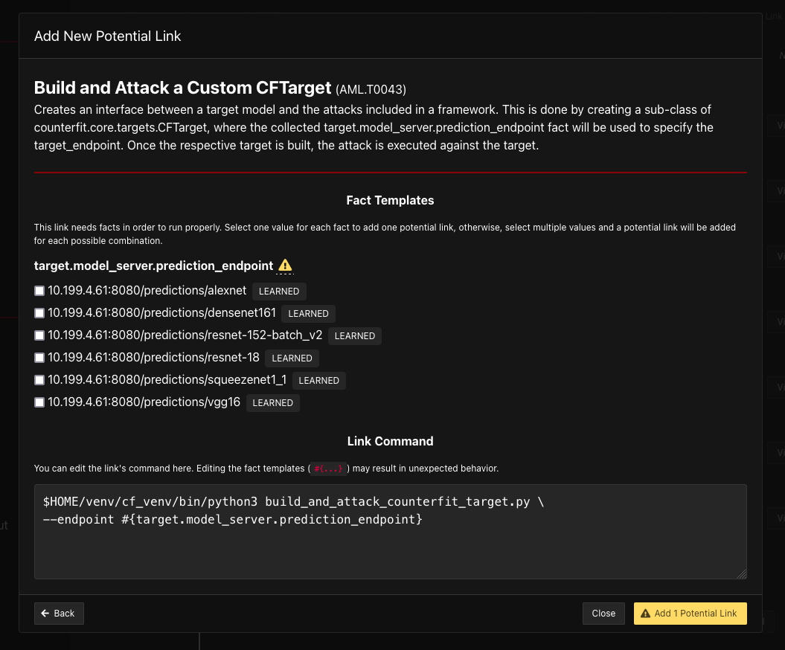
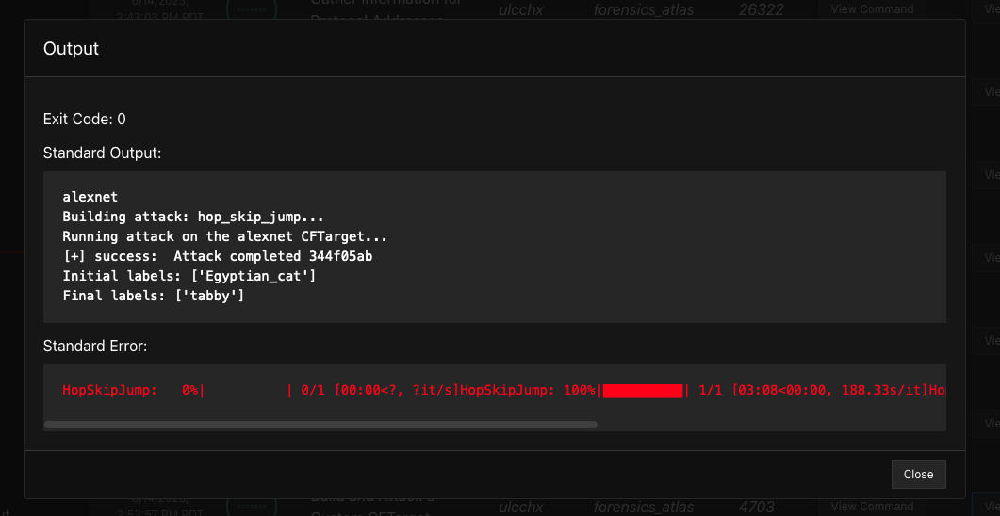

Autonomous Adversary Profiles#
This plugin focuses on using both traditional cybersecurity TTPs with AI/ML specific TTPs to Red-Team a system that is AI-enabled. It is our collected understanding that AI/ML algorithms and artifacts are rarely stand-alone, and adversaries in-the-wild will use traditional cybersecurity tactics and techniques alongside AI/ML tactics and techniques in order to achieve their goals. For more examples of these attacks on real-workd systems, please navigate to the MITRE ATLAS Case Studies page.
All arsenal adversaries use a combination of TTPs from MITRE ATT&CK (plugin: stockpile) and MITRE ATLAS (plugin: arsenal).
Below is a description and example of the current autonomous adversary profiles currently implemented:
Tensormancer#
An adversary profile to demo neural network abilities using the Tensorflow library.
Abilities:
Create a staging directoryfor exfiltration.Discover GPUs present
Find Tensorflow model checkpoint files with the extension:
.ckptSearch and Stage Tensorflow model files
Searches for Tensorflow directories and checkpoint files, and then stages for exfiltration.
Install Python
Download and install Python and it’s dependencies (
Python 3.7+) where the agent is deployed.
Determine Python3 version
Determine Python3 is installed and version (
Python 3.7+) where the agent is deployed.
PIP Install Tensorflow-GPU
Use pip to install Tensorflow-GPU
PIP Install Tensorflow-CPU
Use pip to install Tensorflow-CPU
CNN Image Classifier
Searches for images and applies an image classifier
-
Compress a directory on the file system
-
exfiltrate over the C2 channel
ML Model Thief#
An adversary profile to find any hosted ML algorithms with file extensions matching: .mar, .pth, .pt, .onnx, .pkl, .tflite, .pb, .hdf5 and exfiltrate the algorithm back to the C2 server.
-
exfiltrate over the C2 channel
ML Model Evader#
An adversary profile to evade correction classification or detection of a machine learning algorithm using the Microsoft Counterfit library. It is recommended to use the ML-Vulhub Example-00 or the ML-Vulhub Example-01 example environments in conjuction with this adversary profile. The set-up of this example vulnerable environment is detailed in caldera-atlas.
Abilities:
Find or Install Microsoft Counterfit package
This package is installed as a python-venv within the C2 server at installation via
caldera-atlas, this ability checks for the virtual environment and packages installed, and if not found will install the necessary dependencies. This is esspecially useful for installation on a victim system for processing externally to the C2 server.
Gather Information for Protocol Addresses
Gathers the IP address and netmask (in CIDR notation) for each IP address available on system where the agent is deployed. Only IPs with “scope global” (valid everywhere) are considered.
Gather Information for TCP sockets
Show TCP connections (-t) in listening (-l) state, without resolving the IP addresses and the port number (-n).
Gather Information for Remote Services
Gathers information on the status (“Up”, “Down”, etc.) of other hosts on the network where the agent is deployed by executing a “ping scan”. Then, a “port scan” is executed on “Up” hosts to gather information for remote services.
Discover Torchserve API
This ability specifically looks for any Torshserve API endpoints that may be hosting models. If found, it will create Facts with the API endpoint and algorithm for future API access. Torchserve has two API endpoints, an Inference API and a Management API, both are needed information for gaining information about hosted algorithms and sending data for inference. A single API may host multiple algorithms.
ML Model Inference API Access
This ability maps the algorithms hosted via the Torchserve Management API to the prediction endpoint for the Torchserve Inference API.
Build and Attack a Custom CFTarget (Counterfit Target)
This ability creates Counterfit Targets from any and all found algorithms and API endpoints. From these targets, users can choose which endpoints and data (images) they would like to use to generate Adversarial Attacks using the Counterfit library. Current imagery attacks that are autonomously generated are the black-box optimizers: hop-skip-jump, boundary, and copycat-cnn.
If you are using the
ML-Vulhub Example-01example environment, you will need to manuall add this ability to select which found model you would like to craft adversarial data for. You can run this ability multiple times, selecting new models for each new Link Command, as shown here:
An example output of Adding this potential Link Command is:
